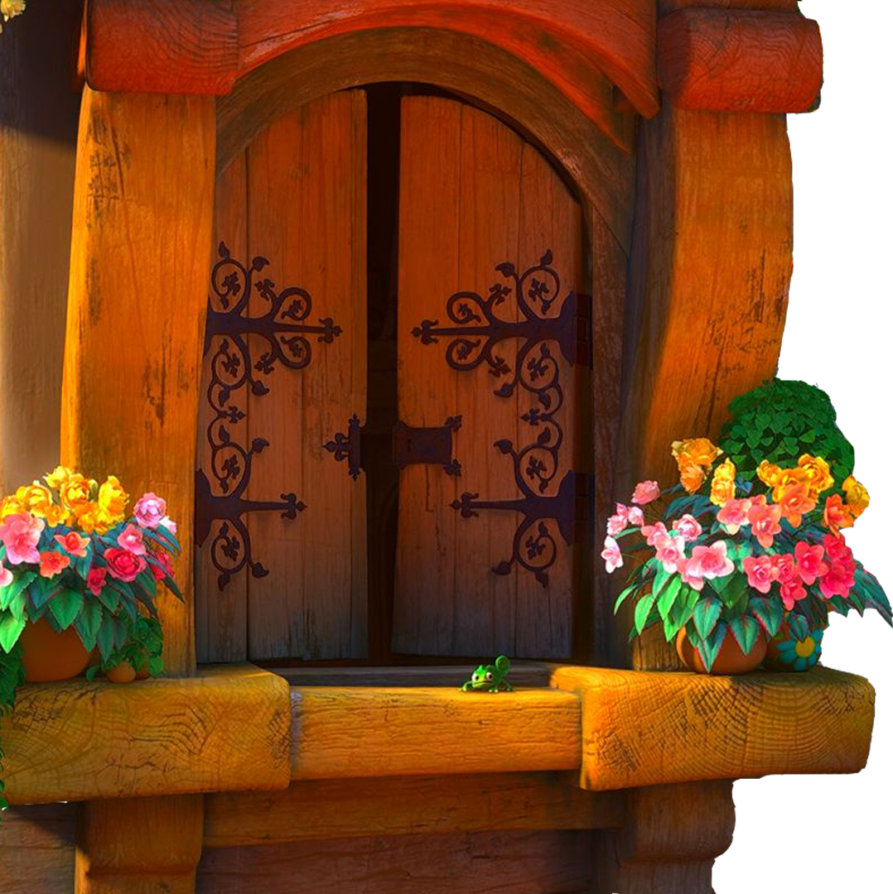
 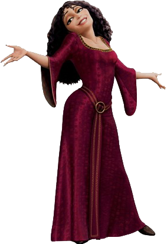
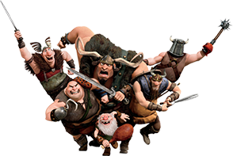
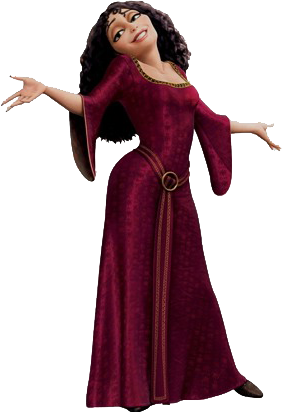
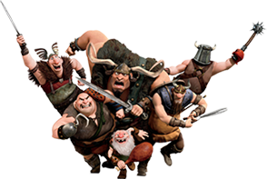
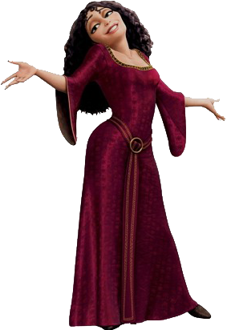
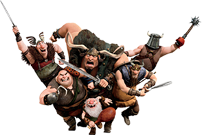
“길고 어두운 탑 꼭대기에는 라푼젤이라는 공주가 갇혀 살고 있었습니다. 그녀는 어린 시절부터 한 마녀에 의해서 납치당했고, 성인이 될 나이가 되도록 탑에서 벗어나지 못하고 있었습니다. ”
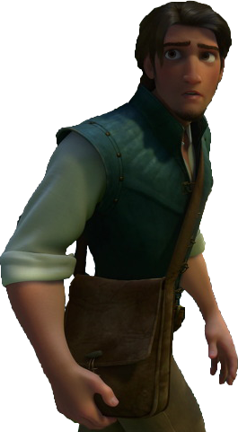
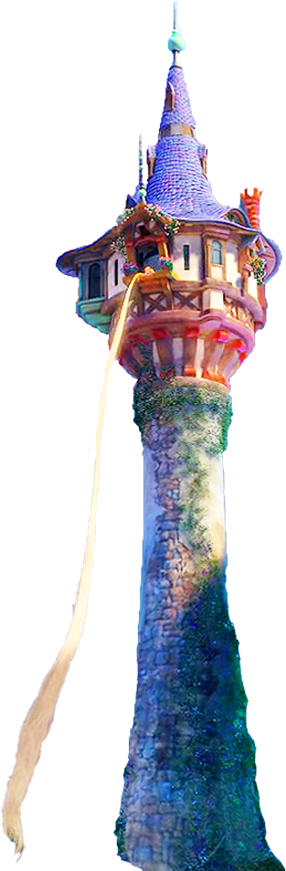
“매일 매일 그녀를 사랑하는 남자가 매일같이 탑으로 왔지만, 높은 탑을 오를 수 있을 만큼 튼튼한 밧줄이 없었기에 남자는 항상 실패하고 말았습니다.”
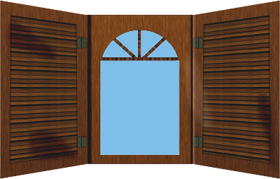
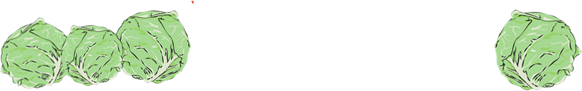
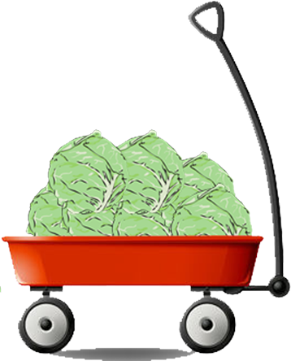
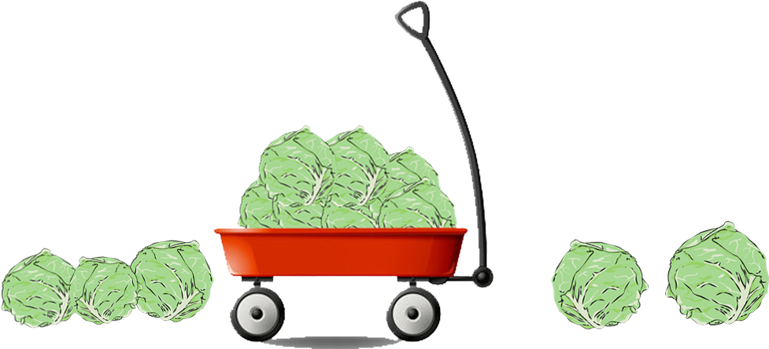
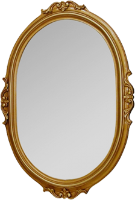
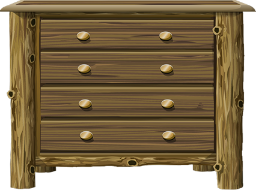
“어떻게 하면 이 탑을 벗어날 수 있을 까 하고 매일 생각했던 라푼젤은 자신의 이름이 양배추라는 것을 생각해 냅니다. 젊고 윤기 나는 머리칼을 갖고 싶었던 라푼젤의 어머니가 마녀의 텃밭에서 양배추를 먹었고 그 업보로 자신이 납치 되었다는 것을 알게 된 라푼젤은 몰래몰래 양배추를 먹으며 머리를 길렀습니다.”
 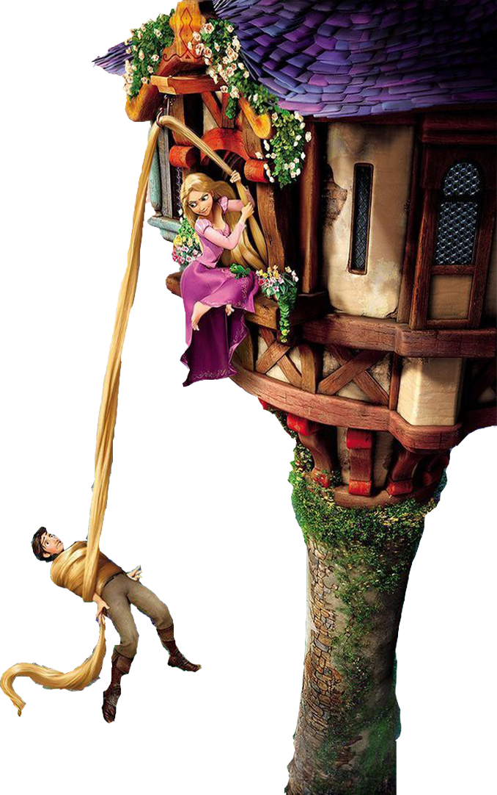
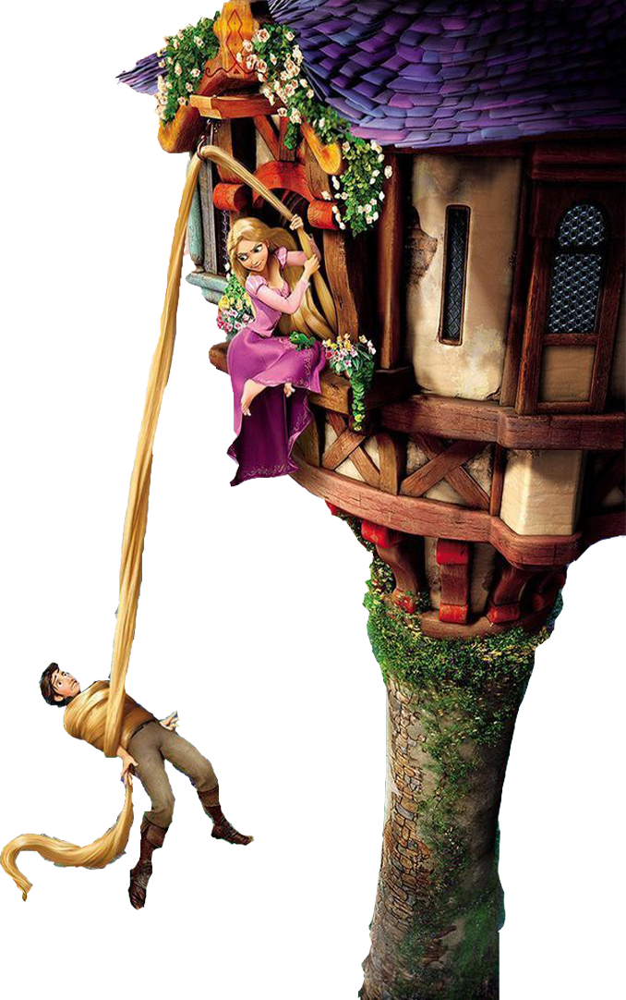
“그렇게 풍성하고 아름다운 머리카락을 갖게 된 라푼젤은 자신을 구하러 온 남자에게 밧줄 대신 자신의 머리카락을 던졌고, 남자는 밧줄보다 튼튼하고 건강한 라푼젤의 머리카락을 타고 탑으로 올라와 그녀를 구했답니다.”
라푼젤